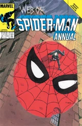
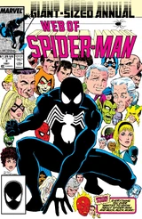
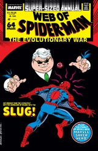
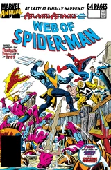
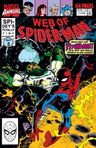
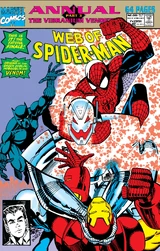
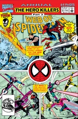
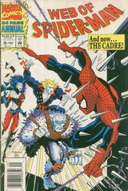
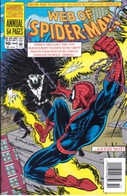

Web of Spider-Man Annual (1985 - 1994)
| Comic Book | Release Date | Cover |
|---|---|---|
| Web of Spider-Man Annual #1 Give Me a Hand, Future Max |  | |
| Web of Spider-Man Annual #2 Wake Me Up I Gotta Be Dreaming |  | |
| Web of Spider-Man Annual #3 |  | |
| Web of Spider-Man Annual #4 Sweet Poison! |  | |
| Web of Spider-Man Annual #5 War Zone: New York |  | |
| Web of Spider-Man Annual #6 Up From Slavery |  | |
| Web of Spider-Man Annual #7 The Machine and the Man |  | |
| Web of Spider-Man Annual #8 Hero Killers, Part 3: The Dark At the End of the Tunnel |  | |
| Web of Spider-Man Annual #9 Origin of the Cadre |  | |
| Web of Spider-Man Annual #10 Shriek, Rattle and Roll |  |